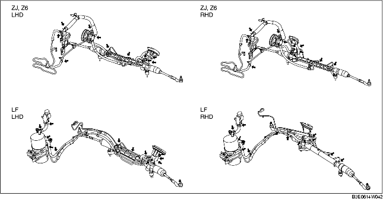

CONTROLE STUURBEKRACHTIGINGSVLOEISTOF
B3E061432040W01
Controle vloeistofniveau
1. Controleer of de vloeistofniveau in het reservoir zich bij koude motor tussen MAX en MIN bevindt.
-
• Vul vloeistof bij of tap overtollige vloeistof af tot het vloeistofniveau in orde is (tussen MIN en MAX in het reservoir).
-
Specificatie vloeistof
-
ATF M-III of gelijkwaardig (bv. Dexron®II)
Controle vloeistoflekkage
1. Start de motor en laat deze stationair draaien.
2. Draai het stuurwiel volledig naar links en rechts zodat het systeem op druk kan komen.
-
Opmerking
-
• Houd het stuurwiel niet langer dan 5 seconden in de uiterste stand. Hierdoor kan de vloeistoftemperatuur sterk stijgen, waardoor de werking van de pomp negatief beïnvloed wordt.
3. Controleer bij de aangegeven punten op lekkage.

-
• Vervang de desbetreffende onderdelen als een vloeistoflekkage wordt ontdekt.
Controle vloeistofdruk
1. Plaats het SST zodanig dat de kraan van het SST op de aangegeven manier in de richting van het stuurhuis wijst.
2. Neem de slangkoppeling aan de zijde van de pomp los en sluit het SST uit stap 1 aan.
-
Aanhaalmoment
-
29,4-44,1 Nm {3,00-4,49 kgm, 21,6-32,5 ft·lbf}
3. Ontlucht het systeem.
4. Open de klep van de manometerset geheel.
5. Start de motor en draai het stuurwiel volledig naar links en naar rechts zodat de temperatuur van de vloeistof stijgt tot 50-60°C {122-140°F}.
6. Sluit de kraan geheel.
7. Verhoog het motortoerental tot 1.000-1.500 omw/min en meet de door de oliepomp gegenereerde vloeistofdruk.
-
• Vervang de oliepomp compleet als de waarde lager is dan de specificatie.
-
Opmerking
-
• Houd de kraan niet langer dan 5 seconden gesloten. Hierdoor kan de vloeistoftemperatuur sterk stijgen, waardoor de werking van de pomp negatief beïnvloed wordt.
-
Vloeistofdruk oliepomp (vloeistoftemperatuur: 50-60°C {122-140°F})
-
ZJ, Z6: 8,5-9,0 MPa {87-91 kg/cm2, 1.235-1.305 psi}
-
LF: 10,4-11,0 MPa {107-112 kg/cm2, 1.509-1.595 psi}
8. Open de kraan volledig en verhoog het toerental tot 1.000-1.500 omw/min.
9. Draai het stuurwiel volledig naar links en naar rechts en meet de druk in het stuurhuis.
-
Opmerking
-
• Houd het stuurwiel niet langer dan 5 seconden in de uiterste stand. Hierdoor kan de vloeistoftemperatuur sterk stijgen, waardoor de werking van de pomp negatief beïnvloed wordt.
-
Aanwijzing
-
• Als de vloeistofdruk lager is dan de specificatie werkt de oliepomp of het stuurhuis mogelijk niet correct. Vervang de oliepomp compleet.
-
Vloeistofdruk stuurhuis (vloeistoftemperatuur: 50-60°C {122-140°F})
-
ZJ, Z6: 7,6-9,0 MPa {78-91 kg/cm2, 1103-1.305 psi}
-
LF: 9,0-11,0 MPa {92-111 kg/cm2, 1.306-1.585 psi}
10. Verwijder het SST en draai de slangkoppeling aan de zijde van de pomp vast met het voorgeschreven aanhaalmoment.
-
Aanhaalmoment
-
29,4-44,1 Nm {3,00-4,49 kgm, 21,6-32,5 ft·lbf}
11. Ontlucht het systeem.